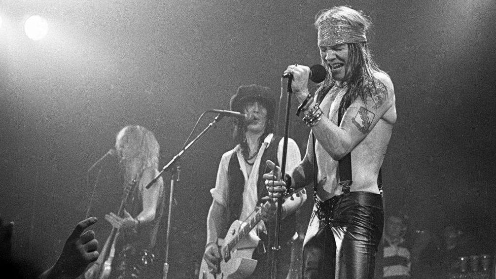

Appetite for destruction tour
Appetite for Destruction Tour fue una gira de conciertos de la banda Guns N' Roses para promover su álbum de debut Appetite for Destruction. En la mayor parte de la gira, Guns N' Roses, fue abriendo conciertos de bandas como The Cult, Iron Maiden, y Aerosmith. La banda viajó principalmente a través de Estados Unidos, pero en la primavera de 1988, fueron invitados al festival Monsters of Rock en Castle Donington, en Inglaterra, donde compartieron cartel con grupos como Kiss y Iron Maiden.